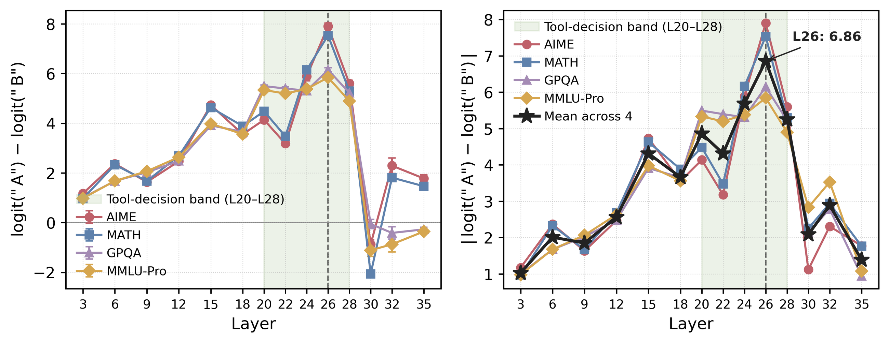

Finding 1 · Depth
The decision is written at a consistent depth
A logit lens at the prompt-end token shows the tool/skip preference staying near zero in early layers, rising across layers 20–28 and peaking at layer 26 on Qwen3-8B. All four models share a similar pattern.
